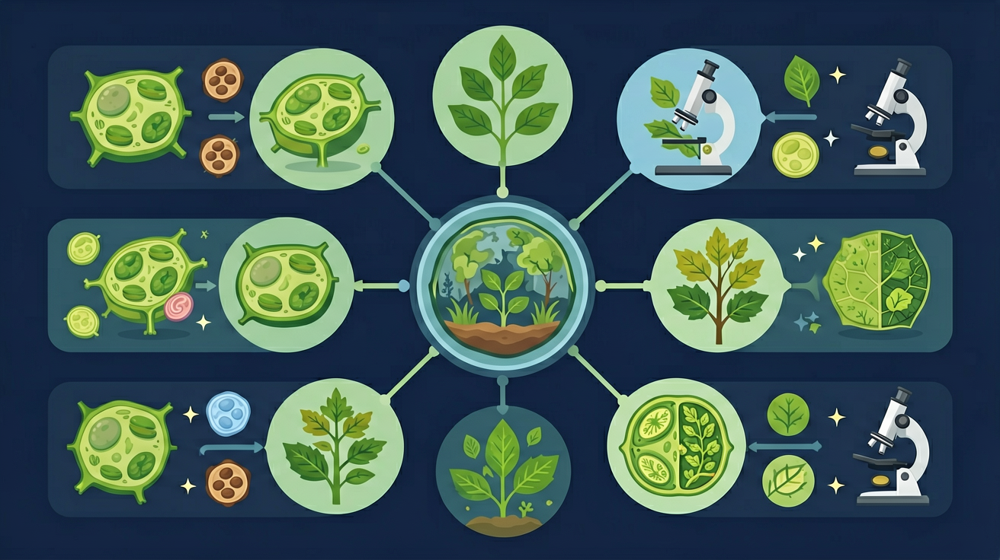
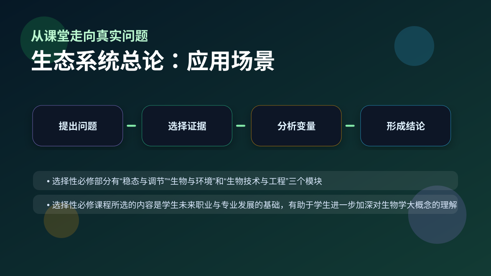

Gallery v1.0.0 · skill v7.14
生命系统怎样在种群、群落和生态系统层面保持动态平衡？

已经知道：此前已学过生物圈组成（生产者、消费者、分解者）、食物链能量流动的10%规律，以及光合作用与呼吸作用的物质转换基础
但问题是：常混淆生态系统边界与生物群落概念，难以理解非生物环境（如阳光/土壤）如何通过物质循环与能量输入参与系统运作，易将分解者误判为‘无关因素’
所以学：当分析‘某湿地公园水质恶化’案例时，需准确追踪污染物在水生植物、鱼类、微生物间的传递路径，并评估温度变化对分解速率的影响，才能提出科学治理方案
先选一个卡点。后面的例子、互动和 AI 学伴都会围绕它给你最小提示。
选择或输入后，本课会围绕你的问题展开。
生态系统中直接能量来源是什么？
现象入口：森林、草原、池塘和农田都包含生物群落和无机环境，并能进行物质和能量交换。
机制解释：生态系统是生物群落与无机环境相互作用形成的统一整体。
证据抓手：证据来自能量输入、物质循环、食物网和系统边界判断。
变量线索：生产者、消费者、分解者、非生物环境和外界输入输出。做题时先找变量，再判断机制，最后写证据。
观察池塘中浮游植物、鱼虾和细菌的分布，识别生态系统的四大组成成分
分解食物链：浮游植物→浮游动物→小鱼→大鱼，箭头指向能量流动方向
生产者通过光合作用固定太阳能，是生态系统能量流动的起点和基石
分析森林生态系统的组成：乔木为生产者，昆虫为消费者，枯枝落叶中的霉菌为分解者
情境：一个鱼缸是否能长期稳定，取决于光照、生产者、消费者、分解者和物质循环是否配合。
作答路径：鱼缸稳定需：1.光照提供能量→生产者（水草）光合作用；2.消费者（鱼）摄食传递能量；3.分解者（硝化菌）分解粪便→物质循环证据：若水浑浊有死鱼，说明分解环节失效
评分提醒：典型错误：遗漏分解者成分、食物链箭头方向错误、将非生物能量误认为生态系统的组成部分
用 PhET 观察环境压力如何改变种群中不同表型个体的比例，再讨论它和 生态系统总论 的关系。
💡 操作提示：改变环境、捕食者或突变条件，记录种群数量曲线，判断哪些变化是个体层面，哪些是种群层面。
真实生态系统中，生产者生物量最大，消费者逐级减少，分解者体量小但不可或缺——缺一环系统就崩溃。
💡 探究任务：对比各成分的生物量占比，解释为什么生产者是生态系统的基石、为什么分解者不能从成分中删除。
把生态系统只理解成“许多生物”，忽略无机环境和功能过程。
只说“增加/减少”不够，要写清改变的是 生产者、消费者、分解者、非生物环境和外界输入输出 中的哪一个。
没有实验现象、曲线趋势或结构证据，答案就像猜测。
下列哪项必然属于生态系统？
视频用语音和动态画面回顾本课主线：问题情境 → 机制模型 → 证据判断 → 迁移应用。

评价人工生态系统、湿地保护和生态农业，都要看系统结构和功能。
提交后会检查你的解释是否包含现象、机制和变量。
如果学生只说出概念名称，继续追问：题干里哪个证据最关键？这个证据对应分子、细胞、个体还是生态系统层级？如果改变 生产者、消费者、分解者、非生物环境和外界输入输出 中的一个条件，结果会怎样？这三问能把答案从背诵推进到科学解释。
写出含三个营养级的食物链（例：草→兔→狼）
分析森林火灾后演替过程，说明各成分如何逐步恢复
设计封闭生态瓶，列出必需成分并解释其作用关系
若某生态系统突然失去全部分解者，最先受到直接影响的功能是？
学习小结：生态系统通过生产者固定能量、消费者传递能量、分解者分解物质实现功能，营养结构（食物链/网）是能量流动渠道，三者缺一不可
先独立作答，再点选项查看对错与错因。
人工湖藻类爆发的主要原因是
最能体现该生态系统自动调节能力的环节是
引入下列哪种水生植物改善效果最好？
柳树落叶进入水体后，被____分解为无机物
答案：微生物
分解者完成物质循环
藻类爆发导致鱼类减少，说明生态系统的____能力有限
答案：自动调节
超出阈值时稳态被破坏
关于生态系统组成叙述正确的是
设计对照实验验证不同植物对氮磷的吸收效率
❓ 为什么说生态系统像一台精密机器？
❓ 人类活动到底怎么破坏生态平衡的？
❓ 课本说能量流动是单向的，那为啥还有循环利用的说法？
学完这一课，这些问题你都能自信地回答。
✅ 补充蚯蚓、秃鹫等大型分解者案例
💡 教材示例偏重微观分解过程
✅ 用金字塔图形强调能量逐级散失
💡 未区分比例与绝对值的概念差异
口诀：能量单向走，物质循环兜，人为干扰多，平衡说拜拜
类比：像小区垃圾分类站：居民（生产者）扔垃圾，保洁（分解者）处理，垃圾车（非生物环境）运输